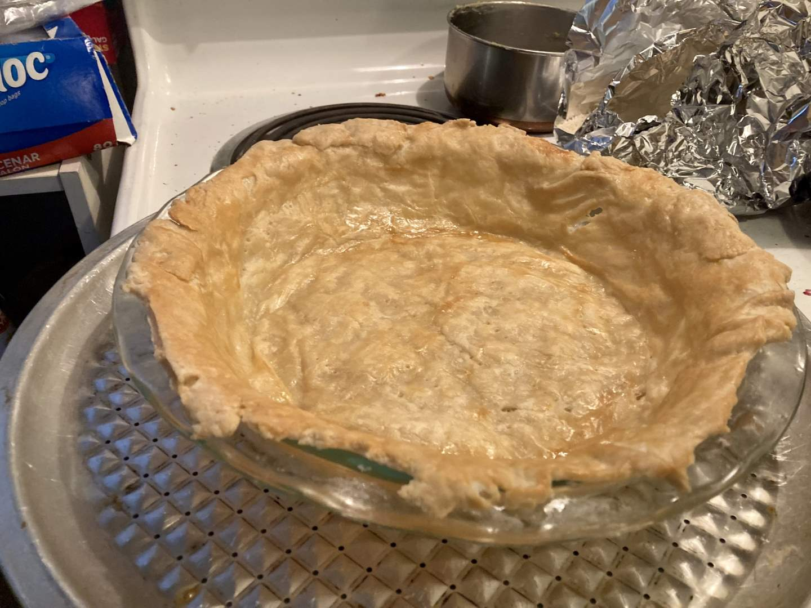

Pie 44: Mango Cream
2024-04-28Recipe from Comfortably Domestic.
Taste:
Difficulty:
Vibes:
Suggested pairing: grilled hamburgers and hot dogs, spicy goldfish, s’mores
To be a dessert master, one must know how to fit the dish to the occasion. Even after the dozens of pies, we have yet to fully learn this lesson. Some (perhaps most) pies do not make good desserts for outdoor cookouts. Next time, maybe we should bake bars or cookies.
I should back up. One Sunday in April (I write this now during the balmy month of June), Katie Beth and I prepared our most tropical pie since the luscious Dragon Fruit Pie last year. She whipped up a batch of creamy egg-based pudding from scratch and refrigerated it while I made yet another pie crust, rolled it out, and blind-baked it until brown. We refrigerated that as well so the entire dish would be cool, allowing the cream to set.
Lacking any specialized tools for mango-peeling, Katie Beth set herself to that critical task with a paring knife while the pie shell was in the oven. Mangos are juicy and slippery--even compared to other fruits--but she got the skins off after a bit of effort.
Our recipe suggested arranging the mango in a rosette pattern, which Katie Beth figured required thin slices. We carefully overlapped the slices in many layers, finally curling up some of the thinnest mango strips for the very center.
We cooled the pie for about an hour and carefully cut and removed some slices. The crust was flakey, the filling was cool and creamy, and the mango was delectable and juicy. The next day, we took the pie to the cookout mentioned above, where the delicate slices got a bit mangled but were nevertheless praised. We recommend this pie for an indoor event requiring a classy and beautiful dessert.